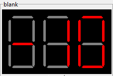
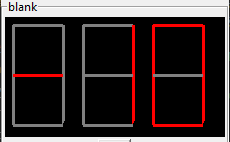

LabControl
Getting started
PToolkit LabControl provides an environment for creating gui applications for lab setups. It does this by introducing a standard framework and a set of widgets. To get stared create a project using the follow command where <projectname> is the name of your application
PToolkit newproject <projectname>
This creates the following file structure:
project
├── interfaces
│ └── blankinterface.py
├── log
├── scripts
├── profiles
├── .state
└── Main.py
The Interfaces folder contains all the application’s interfaces. An interface is a piece of code containing one or more widgets that can be duplicated or easily shared with others. The log folder contains the application logs, the scripts folder contains Python scripts that can be called using a script loader, the profiles folder is currently unused. The .state file stores parameter values, these values are reloaded when the application is restarted. The Main.py file is the main application file where all interfaces are added to the application.
The main application file looks like:
# Configure some important things
import sys, os, logging
BASEDIR = os.path.dirname(os.path.abspath(__file__))
from PToolkit.LabControl import MainPToolkitApp, PTOOLKITLOGGER
# Configuring the logger
PTOOLKITLOGGER.setLevel(logging.INFO)
# Loading the interfaces folder
sys.path.append(BASEDIR + "\\interfaces")
# Your application
# ------------------------------------------------------------------------------------------------
from blankinterface import blankinterface
root = MainPToolkitApp()
blankinterface(root, "BlankInterface").pack()
if __name__ == "__main__":
root.mainloop()
The MainPToolkitApp functions as TK from tkinter with the only difference being some background stuff such as handeling the .state file. Every interface that is created behaves as a tkinter labelframe, and must be placed under the definition of root, both pack and grid are supported for interfaces. The PTOOLKITLOGGER is automaticly imported and configured, only when debugging change the level to DEBUG (this will slow down the application). The blankinterface.py looks like:
from PToolkit.LabControl import Interface
import tkinter as tk
from tkinter import ttk
import sys
sys.path.append("dependencies/")
class blankinterface(Interface):
def __init__(self, root, name):
Interface.__init__(self, root, name)
self.label = tk.Label(self.frame, text="Welcome to PToolkit")
def __GUI__(self):
self.label.pack()
Every interface created must inherit from interface, make sure this is the first inheritance. By convention all widgets are created in the __init__ method, and all the placement of the widgets is done in the __GUI__ method. This method is automaticly called when it is added to the MainPToolkitApp. Creating a new interface can be done by hand or by terminal using the following command:
PToolkit newinterface <interfacename>
Example
In this example we will create a very simple Arduino interface. We create our project using the following command:
PToolkit newproject myfirstapp
And create a new interface using (make sure to be in the interface dir):
PToolkit newinterface Arduino
In our Arduino.py file we will first add a VerticalAllign object to allign our widgets and a terminal:
class Arduino(Interface):
def __init__(self, root, name):
Interface.__init__(self, root, name)
self.valign = VerticalAllign(self)
self.terminal = Terminal(self)
self.terminal.grid(row=0, column=1)
def __GUI__(self):
self.valign.grid(row=0, column=0, sticky="N")
Next we will import serial and add a serial object and portselector (make sure to put self.valign as the root parameter):
self.serial = serial.Serial(baudrate=9600)
self.portselector = SerialPortSelector(self.valign, self.serial, terminal=self.terminal)
We write two quick methods to talk to our Arduino:
def ReadArduino(self):
try:
return self.serial.readline().decode("utf-8").rstrip()
except:
pass
def SendVar(self):
msg = (str(self.var) + "\n").encode("utf-8")
self.serial.write(msg)
Next we will add a parameterfield and button to our application (make sure it is the PToolkit button, otherwise it won’t work with VerticalAllign):
self.var = ParameterField(self.valign, "Value to send")
self.button = Button(self.valign, text="Send")
The last thing to do is a bit more complicated. We will add a producer and consumer thread, these will handle the data stream for us. These threads will communicate with eachother via a queue (import queue) we create one with size 10.:
self.prod = ProducerThread(
name="ArduinoRead",
generationfunction=self.ReadArduino,
queue=self.arduino_queue,
interval=0.1,
terminal=self.terminal
)
self.cons = ConsumerThread(
name="TerminalPrinter",
consumerfunction=self.terminal.terminal_msg,
queue=self.arduino_queue,
interval=0.1,
terminal=self.terminal
)
self.prod.start()
self.cons.start()
The producer thread will execute the self.Arduino method every 0.1 seconds and put the data into the queue. The consumer thread takes one piece of data out of the queue every 0.1 seconds. All of this happens on the background, therefore the impact on our application is minimal. Both threads are started using the start method. Note that for a very simple Arduino program these threads are not required, one can simple run readline after write and as long as the Arduino respons in a reasonable time. Combining all these things together. Our Main.py file looks like:
# Configure some important things
import sys, os, logging
BASEDIR = os.path.dirname(os.path.abspath(__file__))
from PToolkit.LabControl import MainPToolkitApp, PTOOLKITLOGGER
# Configuring the logger
PTOOLKITLOGGER.setLevel(logging.INFO)
# Loading the interfaces folder
sys.path.append(BASEDIR + "\\interfaces")
# Your application
# ------------------------------------------------------------------------------------------------
from Arduino import Arduino
root = MainPToolkitApp()
Arduino(root, "Arduino").pack()
if __name__ == "__main__":
root.mainloop()
And our Arduino.py file looks like:
sys.path.append("dependencies/")
from PToolkit.LabControl import *
import tkinter as tk
import serial, queue
class Arduino(Interface):
def __init__(self, root, name):
Interface.__init__(self, root, name)
self.valign = VerticalAllign(self)
self.terminal = Terminal(self)
self.serial = serial.Serial(baudrate=9600)
self.portselector = SerialPortSelector(self.valign, self.serial, terminal=self.terminal)
self.var = ParameterField(self.valign, "Value to send")
self.button = Button(self.valign, text="Send", command=self.SendVar)
self.arduino_queue = queue.Queue(10)
self.prod = ProducerThread(
name="ArduinoRead",
generationfunction=self.ReadArduino,
queue=self.arduino_queue,
interval=0.1,
terminal=self.terminal
)
self.cons = ConsumerThread(
name="TerminalPrinter",
consumerfunction=self.terminal.terminal_msg,
queue=self.arduino_queue,
interval=0.1,
terminal=self.terminal
)
self.prod.start()
self.cons.start()
def __GUI__(self):
self.valign.grid(row=0, column=0, sticky="N")
self.terminal.grid(row=0, column=1)
def ReadArduino(self):
try:
return self.serial.readline().decode("utf-8").rstrip()
except:
pass
def SendVar(self):
msg = (str(self.var) + "\n").encode("utf-8")
self.serial.write(msg)
The following code on the Arduino
void setup() {
Serial.begin(9600);
}
void loop() {
while (Serial.available() == 0) {}
String mystr = Serial.readString();
mystr.trim();
Serial.print("Arduino reads: ");
Serial.println(mystr);
}
When running this application pressing the send button will send the data from the parameterfield to the Arduino and the Arduino will respond with “Arduino reads” + the parameterfield value.
Core classes
- class MainPToolkitApp
The main application of for the LabControl part of PToolkit
Note
MainPToolkitApp functions the same as tk.TK, only difference is that it handles interafaces in the background.
- __init__(appname)
- Parameters:
appname (str) – The name of the application.
- mainloop()
Method to start the mainloop
- set_exit_func(func)
Method that allows the user to execute a function before the application closses.
- Parameters:
func (func) – Function to be executed
- class Interface
The interface class providing a common backend to PToolkit widgets.
- __init__(master, name)
- Parameters:
master – PToolkit main application
- Pram str name:
The name of the interface. Must be unique in each application
- class Parameter
Some of the PToolkit widgets inherit from the Parameter subclass. This means that these widgets acts like a number when performing arithmetic’s. For example the display class
self.display = Display(root, "Test") self.display.pack() new_value = self.display + 1 new_value = self.display * 100 new_value = self.display / 100
Some of the parameters (currently only the parameterfield) will save them self when the application is closed, and reload them selfs when restatring. Thus setting a parameterfield to 102.1, closing the application and restarting will mean that the 102.1 is still there. These values are stored in the .state file of the application.
Widgets
Controls
- class Button
A button class currently only used for a compatibility issues with VerticalAllign.
- __init__(root, text='', command=None)
- Parameters:
root – Parent window
text (str) – Text on the button
command (function) – function to execute when pressed.
- class KeyBoard
Class that creates a widget having a variable amount of buttons that can be mapped. Great for controlling movement based robots.
- __init__(root, grid, textgrid=None, commandgrid=None, imagegrid=None)
- Parameters:
root – Parent window
grid (list) – List with 0 or 1 to indicate where a button must be placed
textgrid (list) – A list with text for each index
commandgrid (list) – A list with functions for each index
imagegrid (list) – A list with image paths for each index
Example
from PToolkit.LabControl import KeyBoard
import numpy as np
class blankinterface(Interface):
def __init__(self, root, name):
Interface.__init__(self, root, name)
# TTi 1604 buttons
self.keyboard = KeyBoard(self, np.ones((3, 4)),
[
["mV", "V", "\u2126", "\u2191"],
["mA", "A", "Hz", "\u2193"],
["DC", "AC", "SHIFT", "Auto"]
],
commandgrid= [
[self.myfunc1, self.myfunc2, self.myfunc1, self.myfunc2],
[self.myfunc1, self.myfunc2, self.myfunc1, self.myfunc2],
[self.myfunc1, self.myfunc2, self.myfunc1, self.myfunc2],
[self.myfunc1, self.myfunc2, self.myfunc1, self.myfunc2]
]
)
def __GUI__(self):
self.keyboard.pack()
def myfunc1(self):
print("1")
def myfunc2(self):
print("2")
- class ArrowKeyPad
Class that creates a widget having a variable amount of buttons that can be mapped. Great for controlling movement based setups, such as: microscopes, robots or 3D printers.
- __init__(root, commandgrid, size=(4, 4), includehome=False, design='*')
- Parameters:
root – Parent window
commandgrid (list) – A 3x3 list with a function or None in each of its entrys. Each of the entrys corrosponds with the button at that position.
size (tuple) – Tuple of the size of the buttons.
includehome (bool) – If a home button must be included.
design (str) – The design used for the widget, options:
*,+,<>v^
Example:
class blankinterface(Interface):
def __init__(self, root, name):
Interface.__init__(self, root, name)
self.mykeypad = ArrowKeyPad(self,
includehome=False,
design="+",
commandgrid= [
[None, self.myfunc, None],
[self.myfunc, None, self.myfunc],
[None, self.myfunc, None]
])
def __GUI__(self):
self.mykeypad.pack()
def myfunc(self):
print("test")
{kind=link}
- class StatusLED
Method that adds a status led, that can be toggled to show a status. Green for a True state and red for a Fase state.
- __init__(root, text)
- Parameters:
root – Parent window
text (str) – The text that must be inserted into the label
- toggle_state()
Method that will invert the state it is currently in.
- set_state(state)
- Parameters:
state (bool) – if True the LED will change to a green, if False it changes to red.
- get_state()
- Returns:
The current state of the LED
- Return type:
bool
Example:
from PToolkit.LabControl import StatusLED
class blankinterface(Interface):
def __init__(self, root, name):
Interface.__init__(self, root, name)
self.led = StatusLED(self, "Status")
# self.frame must be used instead of self for default tkinter objects.
self.button = tk.Button(self.frame, text="toggle", command=self.led.toggle_state)
def __GUI__(self):
self.led.pack()
self.button.pack()
Hardware interfacing
SerialPortSelector is a widget that makes it easy to connect to a serial devices while the main application is running. This can for exampl be used to select a specific Arduino during operation.
- class SerialPortSelector
Class that creates a widget that can be used to scan and select serial devices.
- __init__(root, serial, text='Serial devices: ', terminal=None)
- Parameters:
root – Parent window
serial (serial.Serial) – Serial object from the pyserial library
text (str) – Text that is displayed on the label.
terminal (PToolkit.Terminal) – PToolkit terminal object
- set_port(port)
Method to set the current port on the serial object.
- Parameters:
port (str) – The serial port to connect to.
- get_serial_devices()
Method scans for available serial ports
SerialPortSelector adds the following command to the terminal:
reloadserial: Scans the available serial devices again
Example:
from PToolkit.LabControl import SerialPortSelector
import serial
class blankinterface(Interface):
def __init__(self, root, name):
Interface.__init__(self, root, name)
self.serial = serial.Serial()
self.portselect = SerialPortSelector(self, self.serial)
def __GUI__(self):
self.portselect.pack()
Terminal
- class Terminal
Class that creates a terminal widget, that can be used to communicate with the user during operation. It can also be used to execute commands.
- __init__(root, text=None, allowcommands=True)
- Parameters:
root – Parent window
text (str) – Text to be displayed on the labelframe
allowcommands (bool) – If typing commands in the terminal should be allowed
- terminal_msg(msg, error=False)
A method that prints a message or error in the terminal.
- Parameters:
msg (str) – The message the user wants to print in ther terminal.
error (bool) – If the msg must be printed as an error message. If True the message will be printed in red.
- list_commands()
A method that prints the available commands in the terminal and adds there doc string as a description.
- run_command(command)
Method that runs a command in the terminal.
- Parameters:
command (str) – The command that the user wants to run in the terminal.
- add_command(name, function)
Method that adds a command to the terminal.
- Parameters:
name (str) – The command that the user wants add to the terminal.
function (function) – The function that must be executed when the command is called.
- add_progressbar(name, max)
Method that adds a progressbar to the terminal.
- Parameters:
name (str) – The name of the progressbar that is used to access it.
max (int) – Maximum of iterations.
- delete_progressbar(name)
Method that deletes a progressbar.
- Parameters:
name (str) – The name of the to be deleted progressbar
- update_progressbar(name, amount)
Method to update a progressbar by a variable amount.
- Parameters:
name (str) – The progressbar that must be updated.
amount (int) – The amount of iterations that must be added to the progressbar.
- commands:
A dictionary were the keys are commands and the value is the function to be executed.
Terminal comes with the base commands:
help: Lists all available commands in the terminal
history: Shows the command history.
clearhistory: Clears the command history.
clearterminal: Clears the terminal text.
clearall: Clears both the command history and terminal
Example standard use of a terminal:
from PToolkit.LabControl import Terminal
class blankinterface(Interface):
def __init__(self, root, name):
Interface.__init__(self, root, name)
self.terminal = Terminal(self)
self.terminal.terminal_msg("My first msg")
self.terminal.terminal_msg("This is a error", True)
self.terminal.add_command("myfunc", self.myfunc)
def __GUI__(self):
self.terminal.pack()
def myfunc(self):
self.terminal.terminal_msg("Hello from myfunc")
When running the code above and typing “myfunc” in the terminal will run the myfunc method.
Example progressbar:
from PToolkit.LabControl import Terminal
class blankinterface(Interface):
def __init__(self, root, name):
Interface.__init__(self, root, name)
self.terminal = Terminal(self)
self.terminal.add_progressbar("myprogress", 5)
self.terminal.add_command("add", self.myfunc)
def __GUI__(self):
self.terminal.pack()
def myfunc(self):
self.terminal.update_progressbar("myprogress", 1)
When running the code above and typing “myfunc” in the terminal will update the progressbar.
Data displays and manipulation
- class Plot
Class that creates a plot widget for live data plotting.
- __init__(root, interval=10, maxpoints=50, ylim=(0, 10), diplayfps=False)
- Parameters:
root – Parent window
interval (int) – Interval in update function.
maxpoints (int) – Maximum amount of points to dispaly at any time.
ylim (tuple) – The limits of the y-axis
displayfps (bool) – Show the fps of the plot inside the plot.
- set_xlabel(label)
Method to set the xlabel of the plot.
- Parameters:
label (str) – The x label to set.
- set_ylabel(label)
Method to set the y label of the plot.
- Parameters:
label (str) – The y label to set.
- update_plot(x, y):
Method to set the x and y values of the plot
- Parameters:
x (list) – List of x values
y (list) – List of y values
- appendy(value)
Method to append a vlaue to the y array. Automaticly increments x.
- Parameters:
value (float) – Value that must be appended to the y-axis.
- get_serial_devices()
Method scans for available serial ports
Example:
from PToolkit.LabControl import Plot
import random
class blankinterface(Interface):
def __init__(self, root, name):
Interface.__init__(self, root, name)
self.plot = Plot(root)
self.plot.set_xlabel("x")
self.plot.set_ylabel("y")
# self.frame must be used instead of self for default tkinter objects.
self.button = tk.Button(self.frame, text="Add", command=self.myfunc)
def __GUI__(self):
self.plot.pack()
self.button.pack()
def myfunc(self):
self.plot.appendy(random.randint(1, 9))
- class SevenSegmentDisplay
Class that creates a seven segment display. Supports floats and ints.
- __init__(root, digits, negative_numbers=True, style='hexagon')
- Parameters:
root – Parent window
digits (int) – The amount of digits to display
negative_numbers (bool) – If negative numbers are allowed to be displayed. If true adds a digit for the negative sign.
style (str) – The style of the display
hexagon,rectangle
- update_display(num)
Method to update the display.
- Parameters:
num (float) – The value that must be displayed.
The hexagon style:
{kind=link}
The rectangle style:
{kind=link}
Example:
from PToolkit.LabControl import SevenSegmentDisplay
import random
class blankinterface(Interface):
def __init__(self, root, name):
Interface.__init__(self, root, name)
self.display = SevenSegmentDisplay(self, 2)
# self.frame must be used instead of self for default tkinter objects.
self.button = tk.Button(self.frame, text="Add", command=self.myfunc)
def __GUI__(self):
self.display.pack()
self.button.pack()
def myfunc(self):
self.display.update_display(random.randint(-10, 10))
- class Display
Class that creates a display. The display is a combination of three tkinter labels. The display can easyly updated with the get and update_display method.
Note
The Display class inheritance from the parameter class. Therefore it functions as a Parameter.
- __init__(root, text='', unit='-', font=2)
- Parameters:
root – Parent window
text (str) – The text that names the label
unit (str) – The text for the unit label/
font (int) – The font size of the labels
- get()
Method to get the current value of the display
- Returns:
The data displayed.
- Return type:
str
- update_display(value)
Method to set a value on the display
- Parameters:
value (str) – The value that is set on the display.
Example:
from PToolkit.LabControl import Display
import random
class blankinterface(Interface):
def __init__(self, root, name):
Interface.__init__(self, root, name)
self.display = Display(self, "Speed", "m/s")
# self.frame must be used instead of self for default tkinter objects.
self.button = tk.Button(self.frame, text="Test", command=self.myfunc)
def __GUI__(self):
self.display.pack()
self.button.pack()
def myfunc(self):
# Parameter behavior
print(self.display + 1)
print(self.display * 100)
self.display.update_display(random.randint(-10, 10))
- class ParameterField
Class that adds a parameter field. Similair to an entry only with a labels on its sides and parameter support.
Note
The ParameterField class inheritance from the Parameter class. Therefore it functions as a parameter.
- __init__(root, text='', unit='-', font=2, save=True, from_=-999, to=999, increment=0.1)
- Parameters:
root – Parent window
text (str) – The text that names the label
unit (str) – The text for the unit label/
save (bool) – If the parameter must be saved in the .state file of the project, and if this value is loaded when restarting.
font (int) – The font size of the labels
from (int) – The min value of the spinbox
to (int) – The max value of the
increment (float) – The increment size of the spinbox
- get()
Method to get the current value of the ParameterField
- Returns:
The data displayed.
- Return type:
str
Example:
from PToolkit.LabControl import Display
class blankinterface(Interface):
def __init__(self, root, name):
Interface.__init__(self, root, name)
self.speed = ParameterField(self, "Speed", "m/s")
# self.frame must be used instead of self for default tkinter objects.
self.button = tk.Button(self.frame, text="Test", command=self.myfunc)
def __GUI__(self):
self.speed.pack()
self.button.pack()
def myfunc(self):
# Parameter behavior
print(self.speed + 1)
print(self.speed * 100)
Alignment
- class VerticalAllign
Class that ads a frame that automaticly alligns widgets veritcaly.
Note
This widget currently only works for: Display, ParameterField, SerialPortSelector, StatusLED, ScriptLoader and the PToolkit Button.
- __init__(root, text='', unit='-', font=2, save=True, from_=-999, to=999, increment=0.1)
- Parameters:
root – Parent window
Example
from PToolkit.LabControl import *
import serial
class blankinterface(Interface):
def __init__(self, root, name):
Interface.__init__(self, root, name)
self.valign = VerticalAllign(self)
self.serial = serial.Serial(baudrate=9600)
self.portselector = SerialPortSelector(self.valign, self.serial)
self.var = ParameterField(self.valign, "Value to send")
self.button = Button(self.valign, text="Send")
def __GUI__(self):
self.valign.pack()
{kind=link}
Scripting
Scripts in PToolkit are saved in the scrips folder and must be written in Python. Every script must contain a main function that takes a single parameter. This parameter is a dictionary of the interfaces in your program, allowing you to use all parameters and command from your application. The docstring of the main function is used to tell others what the script does, this will be printed in the terminal. Scripts are loaded using a ScriptLoader:
- class ScriptLoader
A widget that can load scripts and execute the main function.
- __init__(self, root, text='Script:', terminal=None, default='blank.py')
- Parameters:
root – Parent window
text (str) – The text on the label.
terminal (PToolkit.Terminal) – PToolkit terminal object.
default (str) – Default script that must be selected.
- reset()
Selects the default script.
- list_scripts()
Reloads the script folder and prints the description to the terminal.
- run_scripts(scriptname)
The name of the script file that must be executed. File must be in the scripts folder.
For the example we use the following interface with name “blank”:
from PToolkit.LabControl import *
class blankinterface(Interface):
def __init__(self, root, name):
Interface.__init__(self, root, name)
self.terminal = Terminal(self)
self.var = ParameterField(self, "Variable")
self.loader = ScriptLoader(self, terminal=self.terminal)
def __GUI__(self):
self.terminal.pack()
self.loader.pack()
self.var.pack()
def mymethod(self, val):
self.terminal.terminal_msg(f"This is mymethod speaking var is: {val}")
We can access the blank interface in the script by using it as a key in the interfaces parameter. A simple script could look like:
# The main function will be called by the script loader
def main(interfaces):
"""This is the doc on my script"""
# Getting the blank interface
interface = interfaces["blank"]
# Getting the parameterfield
var = interface.var
# Priting the variable to the
interface.terminal.terminal_msg(f"Our variable is currently: {var}")
# Calling a method from the interface
interface.mymethod(var)
Running this code you will see the messages in the terminal. The ScriptLoader comes with a few commands for in the terminal:
reloadscripts: Reloads the script folder, and shows all available scripts in the terminal with docstrings.
runscript: Runs the currently selected script.
reset: Resets the scriptloader to the default script.